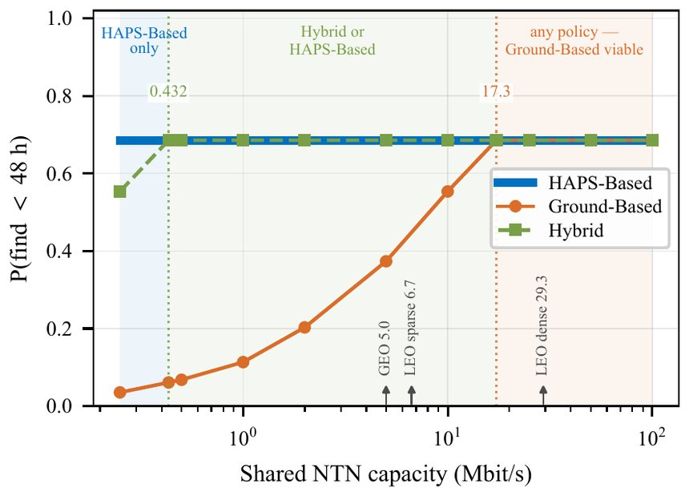

The paper
A vehicle stranded deep in a desert such as the Rub’ al-Khali usually carries no radio beacon and is out of network coverage, so it cannot call for help, and rescuers have a very large area to search.
Our paper proposes a search in layers. High-altitude platform stations (HAPS) in the stratosphere scan a wide area with optical cameras and detect vehicles. Drones then fly out to confirm each candidate at close range, and non-terrestrial links connect the platforms to the rescue coordinators.

To get realistic detection figures, we fine-tuned a YOLO detector on aerial images of vehicles, degraded to the resolution a HAPS camera would have from 20 km. At the chosen setting it found 84.5% of vehicles, with an estimated 231 false alarms over a 20,000 km² search area, few enough for two drones to check within 48 hours.

We then simulated complete search missions under GEO and LEO satellite link budgets and compared them with a search by ground teams. The main finding is that the limit is not detection but getting the imagery to the people who make decisions. Processing the images on board the HAPS cuts the satellite capacity needed by about 40 times, and when the HAPS sends only its detections, even a modest link can support a wide-area search. Sending drones only to the candidates, rather than sweeping the whole area, also cuts their flying by 88%.

The simulation also runs in the browser as an interactive search-coordination console.
Figures from the competition paper. Illustration © 2026 Baha Belmekki.
The competition
The competition is open to researchers, graduate students, and recent PhD graduates. This edition received 81 submissions from universities around the world. In the first round, 40 committee members reviewed the papers and shortlisted ten for the final.
Two weeks before the event in Riyadh, the ten finalists presented in a closed session: a seven-minute talk, then three minutes of questions from a panel drawn from academia, the NTN industry, and regulators. Entries were scored on innovation and originality, sustainability and connectivity impact, practicality and business value, and the presentation and discussion. The prizes were US$15,000, US$10,000, and US$5,000 for the top three.
The winners were announced at the Global Space Connectivity and Sustainability Events 2026, which CST and the International Telecommunication Union (ITU) organized together in Riyadh.